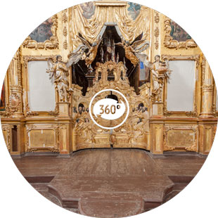
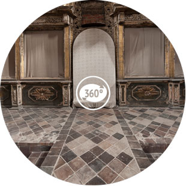

Спасо-Преображенский собор. Вид 1 |
Спасо-Преображенский собор. Вид 2 |
 |
|
Церковь Ильи Пророка. Вид 1 |
Церковь Ильи Пророка. Вид 2 |
Церковь Ильи Пророка. Вид 3 |
Церковь Николы Надеина. Вид 1 |
Церковь Николы Надеина. Вид 2 |
Церковь Николы Надеина. Вид 3 |
|  | |
Церковь Николы Надеина. Вид 4 |
Церковь Рождества Христова. Вид 1 |
Церковь Богоявления. Вид 1 |
Церковь Иоанна Предтечи. Вид 1 |
Церковь Иоанна Предтечи. Вид 2 |
Церковь Иоанна Предтечи. Вид 3 |
|  | |
Церковь Иоанна Предтечи. Вид 4 |
Церковь Иоанна Предтечи. Вид 5 |